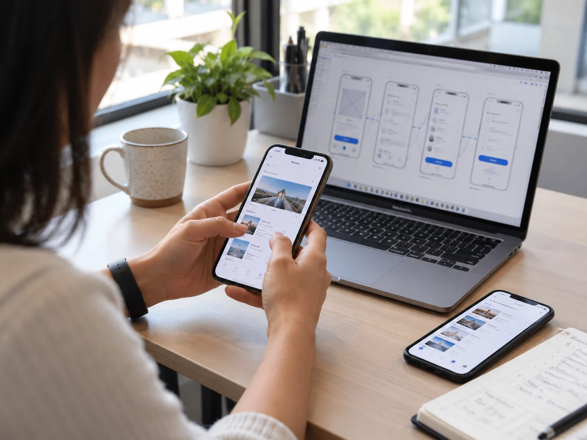
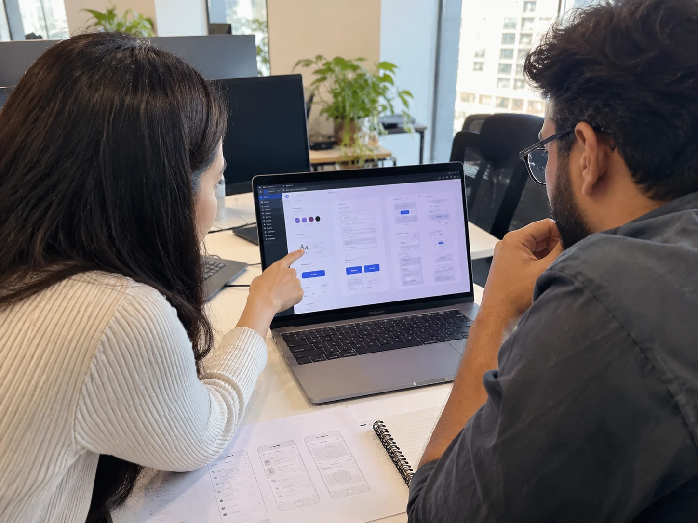

Research and Testing
Tools for interviews, surveys, usability sessions, and behavior analytics on existing products.
UI/UX Design Services
Cypherox provides UI/UX design services for web products and mobile apps, starting with research into what users need to get done. Every interface is tested with real users, designed to WCAG accessibility criteria, and handed to developers as a documented design system.
Explore modular AI architectures tailored to your business:
What Cypherox Offers
Both services follow the same research-led approach but solve different problems: adapting content across screen sizes on the web, and designing for touch, small screens, and on-the-go use in apps.
Websites and web applications that keep content clear and tasks easy to complete on every screen size, from large monitors to phones.
iOS and Android app interfaces designed around short sessions, touch gestures, and platform conventions your users already know.
Visitors switch between laptop, tablet, and phone, and expect the same task to be as easy on each. We design layouts that reorganize content by priority rather than shrinking it, define how every component behaves at each breakpoint, and check color contrast, keyboard access, and screen reader structure. Accessible web design is part of the brief from the first wireframe.
App users decide quickly whether an app is worth keeping, often within the first few screens. We design onboarding, navigation, and core flows around the patterns iOS and Android users already expect, including empty, loading, error, and offline states that are easy to overlook. Clickable prototypes let you test each flow with users before development starts.

Good-looking screens are not the same as usable ones. These four standards guide every screen we design and every file we hand to your developers.

How Cypherox Designs
Design problems are cheapest to fix before code is written. Our five stages test ideas with users early, then refine them into a system developers can build from.
We interview users, review analytics, and study competitors to understand goals, tasks, and current pain points.
We map the pages, screens, and steps users move through to complete their most important tasks.
We sketch layouts, then build clickable prototypes that show how the product works before visual design begins.
We test prototypes with real users and check them against WCAG criteria, then revise what causes confusion.
We apply visual design, document components in a design system, and hand developers complete specifications.
Design Tools
We choose tools that let your team see progress, comment on designs, and pick up files easily after handoff.
Tools for interviews, surveys, usability sessions, and behavior analytics on existing products.
Collaborative design software for wireframes, visual design, and clickable prototypes.
Tools that test contrast, structure, and screen reader behavior during design and review.
Documentation and component tools that keep design and development in sync.
Design Tools
We work in widely used design and research tools so your team can review, comment, and continue the work without switching platforms.
Founders, product managers, and engineering leads on how research-led design changed what their users experienced.
"Hi, my name is Gabrielle, and I'd like to share my experience working with Cypherox Technologies on one of the mobile apps and websites I built with them. The team members at Cypherox Technologies were attentive, diligent, communicative and very, very bright. I had an amazing experience working with them and I highly recommend."

"I'm Britney and I'm the head of conversion optimization for Acadia, a digital marketing agency. I've had the pleasure of working with the Cypherox team for over two, going on three years now. They're fast, hardworking and really diligent developers. They're really reliable, skilled developers and have been a great partner and a pleasure to work with."

"Hey I'm Brian and I recently worked with Cypherox Technologies who developed an e-commerce platform. For me, working with Cypherox Technologies was truly an excellent experience. I recently collaborated with them to design and develop the custom e-commerce platform from the Groundhog and their expertise was evident from day one."

"Hi, I'm Becke. I've had the pleasure of working with Cypherox Technologies on a recent web development project. It was a custom, heavy CRM and the experience was seamless from start to finish. The product was delivered on time and he went the extra mile to ensure everything was done so that we understood the process. It was just, it was brilliant. It was really, really good service. So yeah, absolutely brilliant; I'd recommend it. Thank you so much. Thank you."

"I would highly recommend working with Cypherox Technologies if you need a custom CRM platform. They always exceed their clients' expectations at every stage of the project. Their team designs and builds fully customized ecommerce platforms from the ground up, approaching every project with remarkable skill and dedication."

"Hi, my name is Gabrielle, and I'd like to share my experience working with Cypherox Technologies on one of the mobile apps and websites I built with them. The team members at Cypherox Technologies were attentive, diligent, communicative and very, very bright. I had an amazing experience working with them and I highly recommend."
"I'm Britney and I'm the head of conversion optimization for Acadia, a digital marketing agency. I've had the pleasure of working with the Cypherox team for over two, going on three years now. They're fast, hardworking and really diligent developers. They're really reliable, skilled developers and have been a great partner and a pleasure to work with."
"Hey I'm Brian and I recently worked with Cypherox Technologies who developed an e-commerce platform. For me, working with Cypherox Technologies was truly an excellent experience. I recently collaborated with them to design and develop the custom e-commerce platform from the Groundhog and their expertise was evident from day one."
"Hi, I'm Becke. I've had the pleasure of working with Cypherox Technologies on a recent web development project. It was a custom, heavy CRM and the experience was seamless from start to finish. The product was delivered on time and he went the extra mile to ensure everything was done so that we understood the process. It was just, it was brilliant. It was really, really good service. So yeah, absolutely brilliant; I'd recommend it. Thank you so much. Thank you."
"I would highly recommend working with Cypherox Technologies if you need a custom CRM platform. They always exceed their clients' expectations at every stage of the project. Their team designs and builds fully customized ecommerce platforms from the ground up, approaching every project with remarkable skill and dedication."
Answers for founders and product teams comparing UI/UX design services, covering process, accessibility, web and mobile differences, developer handoff, and cost.
Share what you are building and who uses it, and we will suggest where design work should start. Still shaping the product itself? See startup IT consulting.
Discuss Your ProductThey cover user research, information architecture, user flows, wireframes, clickable prototypes, usability and accessibility testing, visual design, and a documented design system. You can engage us for the full process or for a specific stage, such as research or a redesign.
Responsive web design adapts one website or web app to every screen size in a browser. Mobile app design creates interfaces for installed iOS and Android apps, using platform conventions, touch gestures, device features, and offline behavior that browsers handle differently.
We design to WCAG 2.1 AA criteria from the first wireframe, covering contrast, text size, focus states, labels, and screen reader structure. This supports European Accessibility Act requirements for consumer-facing products, though final conformance also depends on how the design is built.
Yes. We test clickable prototypes with people who match your target users, observing where they hesitate or make mistakes. Findings are prioritized and fixed in the design before development, when changes are fastest and least expensive.
Yes. We start with a UX audit of the current product, using analytics, support tickets, and usability tests to find what causes problems. The redesign then focuses on those issues first instead of changing everything at once.
Developers receive Figma files with annotated screens, component specifications, interaction and state details, spacing and typography tokens, exported assets, and accessibility notes. A documented design system lets them build new screens consistently after the project ends.
It depends on the number of screens and flows, how much research is needed, and the rounds of testing involved. A focused redesign moves faster than a new product designed from research through to a full design system.
Cost depends on the number of screens and user flows, the depth of research and testing, platforms covered, and whether a full design system is needed. We provide a scoped estimate after reviewing your product and goals.
Start With Your Users
Tell us about the product, the people who use it, and what is not working today. We will suggest where design work should start and what it would involve.